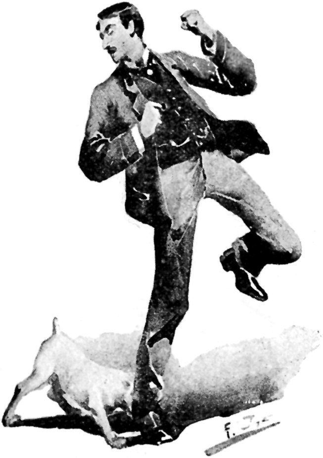
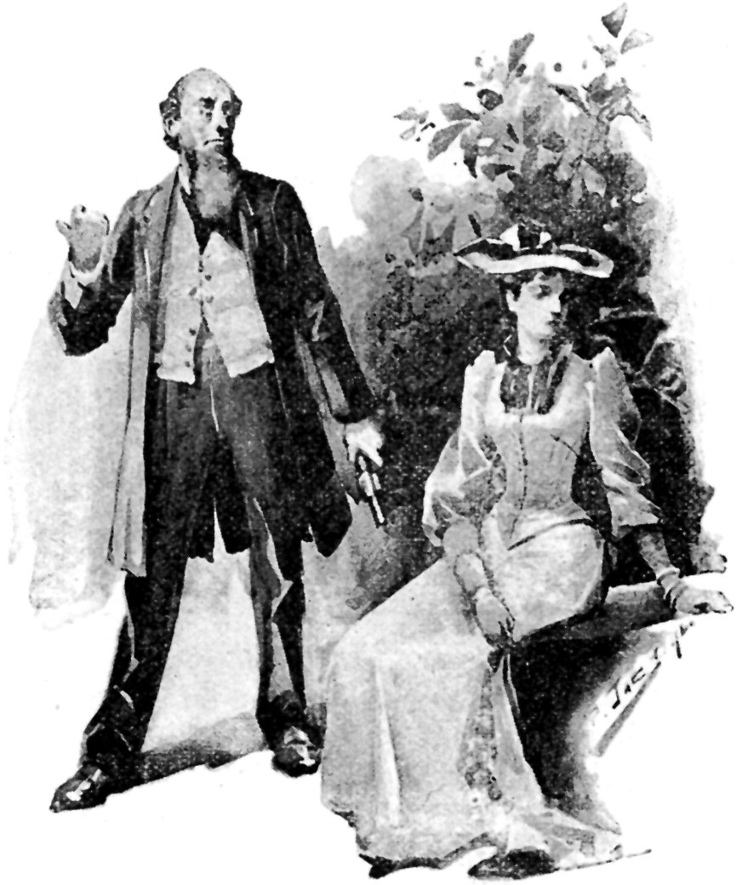

TOLD BY THE COLONEL.
X.
A MATRIMONIAL ROMANCE.
BY W. L. ALDEN.
ILLUSTRATIONS BY R. JACK.
"And by the way," continued the Colonel, "a curious thing about this Josiah Wilson was that he was married for fifteen years and never had any wife whatever."
The Colonel had begun a story concerning one Josiah Wilson, which promised to be interesting, but his incidental allusion to Mr. Wilson's matrimonial experience awakened our curiosity, and we begged him to interrupt his narrative long enough to tell us how it came to pass that Josiah was a married man who never had a wife.
{kind=link}
"The marriage laws in the United States," said the Colonel, giving his chair an increased tilt backwards, which was his usual way of beginning a fresh anecdote, "are as peculiar in their way as are the divorce laws. You would think to look at them that they would permit anybody to marry anybody else in any way that either of them might choose, but for all that they sometimes make it impossible for a man or a woman to get married. There was a couple who intended to be married in a balloon, which is a style of lunacy that is quite fashionable in some parts of the country, though I can't see why a man should want to risk his neck in a balloon on his wedding day unless it is that it takes so much courage to be married at all that a man forgets all about such minor dangers as are connected with ballooning. The bride, the minister, and two witnesses of assorted sexes went up in the balloon at the appointed time, and, naturally, the bridegroom intended to go with them, but he accidentally caught his foot in a neglected guy-rope, and went up head downwards about twenty feet below the car. The party in the balloon could not haul him up because they could not get hold of the rope, and the bride would not consent to give up the trip, because the groom had always been a little shy, and she was afraid that, if she let him go this time, she might not be able to land him again. So the parson went on with the ceremony, and the groom made most of his responses in bad language, and howled for help when he wasn't swearing. When the ceremony was over, the aeronaut managed to land the balloon without seriously damaging the bridegroom, but when, a year or two afterwards, the bride wanted to get her divorce, the court held that there had never been any marriage, for the reason that both the groom and the bride had not appeared together in the presence of the officiating minister, and that, furthermore, there was no provision in the law which would permit a man to be married upside down.

"SMITH'S BULL-DOG."
{kind=link}
"But to get back to Josiah Wilson. He lived in Indiana, close to the boundary line between that State and Illinois, and he courted Melinda Smith, a young woman who lived a little way up the mountain side with her father and three brothers. The girl was anxious to be married, but her family was dead against it. You see Josiah was a Republican and a Methodist, while the Smiths were Democrats and Baptists, and, naturally, they hated each other like poison, and one night as old man Smith and Josiah met on their way to rival prayer meetings, they exchanged revolver shots, without, however, doing any harm. Then once Josiah had most of the calf of his leg taken off by the Smiths' bull-dog, and twice the Smith boys came into the sitting-room where Josiah was calling on Melinda, and suggested to him with their shot-guns that he had better go home. Gradually Josiah and Melinda came to the conclusion that her family was resolved to discourage the match, so they determined to elope and be married without the knowledge or consent of anybody.
"One dark night Josiah carried a ladder and planted it under Melinda's window. He had advised her to walk out of the front door, which was always left unlocked at night, but she refused, saying that if she was going to elope she should do it in the proper way, and that if Josiah had no respect for her, she had some little respect for herself. She climbed down the ladder with a good deal of difficulty, because she insisted that Josiah should help her, and also that he should stand forty yards away, for reasons connected with her ankles, and he found it rather trying to follow out these contradictory orders. However, Melinda reached the ground at last, and the pair started in a carriage that had been waiting just around a bend in the road, in company with the Methodist minister. Their plan was to drive to the next town and there to be married, but it happened that one of the Smith boys, being restless, got up in the night, and, looking out of the window, saw the ladder standing at Melinda's window. In about twenty minutes after the young people had started, the whole Smith family and their shot-guns were following the runaways in a waggon, and gaining on them fast.
"The Methodist minister, whose hearing was unusually good, heard the sound of hoofs before Josiah noticed it, and told the young people that there was not the least doubt that they were pursued, and would be overtaken in a very few minutes. 'And then, you know,' he added, 'the chances are that, being Baptists, they will shoot first, and ask for explanations afterwards. The only thing for us to do is to get the marriage ceremony over before they come up. Then they will see that opposition is of no use, and will listen to reason.'
{kind=link}
"Josiah and Melinda at once consented, and the parson, noticing a little clearing in the woods on the left hand side of the road, and a flat sort of tombstone standing in the middle of it, said that he would stand on that stone and marry his young friends so quick that it would make their hair curl. He was particularly glad to meet with a handy tombstone, for he said that a tombstone was the next thing to a church, and that to be married by the side of a tomb would be almost as solemn as to be married in a minister's study. So the party hastily descended; the parson mounted the stone; Josiah and Melinda joined hands in front of him, and they were married, and the parson had kissed the bride and pocketed his fee just as the Smiths' waggon drove up and the Smith boys cocked their guns and covered the party. But the parson was wide awake. He had his revolver out and old man Smith covered before anybody had taken aim at him, but, instead of shooting, he remarked that he was a minister of the blessed gospel of peace; that there was no necessity for bloodshed, and that he would blow a hole through old Smith unless the Smith boys lowered their weapons and consented to argue the matter. 'The fact is, Colonel Smith,' said the parson, 'you're too late. The young people are legally married, and the sooner you accept the situation the better. I married them not two minutes ago, standing on that identical tombstone.'

"'YOU'LL COME STRAIGHT HOME WITH ME.'"
{kind=link}
"Colonel Smith was a lawyer, and the sharpest one in that part of the country. He saw the force of the minister's remarks, so he told the boys to put up their guns, and he shook hands with the minister. Then he inquired, in a careless sort of way, where Josiah and Melinda had stood while they were being married. The parson showed the footprints of the bride and groom, and then Colonel Smith turned to Melinda and said, 'You'll come straight home with me. There hasn't been any marriage yet. That stone is the boundary mark between Indiana and Illinois, and you were standing in Indiana and that other idiot was standing in Illinois when the parson tried to marry you. Nobody can marry in two States at the same time, and I shan't recognise the pretended marriage till a court of law compels me to do so, which will be never. I hope this will teach you the folly of fooling with Methodism. When you want to get married next time try a Baptist minister, who will know the difference between a tombstone and a boundary mark.' There were too many Smiths, and they were too well armed to be reasoned with successfully, so the upshot was that Melinda went home with her family, and Josiah and the parson went to see a lawyer.
"The next day Josiah brought a suit for divorce against Melinda. It was a friendly suit, you understand, and his only object was to test the question of the validity of his marriage, for, of course, no man can get a divorce unless he first proves that he is married. Old man Smith conducted the case on his side, and a lawyer named Starkweather, who is now a member of the Illinois Legislature, appeared for Josiah Wilson. Colonel Smith argued that while the parson who conducted the alleged marriage ceremony could undoubtedly have married a couple in the State of Indiana, he could not marry a woman in Indiana to a man in Illinois, for the reason that the man and the woman could not be in the same place while they were in two different commonwealths, and that hence Josiah and Melinda had not legally appeared together before the officiating minister. Furthermore, he argued that the minister at the time of the pretended marriage was standing neither in Indiana nor in Illinois, but on the boundary line; that the statute defined the boundary line as 'an imaginary line' running from such and such a point to such and such a point, and that a minister who stands in a purely imaginative locality stands virtually nowhere, and hence cannot perform any function of his calling.
"On the other hand, Josiah's lawyer claimed that the minister had married Melinda Smith in the State of Indiana; that consequently she must have been married to somebody, and that that somebody was unquestionably Josiah Wilson. As to the point that the minister stood in an imaginary locality because, as was alleged, he stood on the boundary line, the lawyer maintained that it was a physical impossibility that a minister weighing two hundred and fifty pounds could stand in a purely imaginative place. Moreover, he was prepared to prove that, while performing the ceremony, at least one of the minister's feet was in the State of Indiana, which was sufficient to make him legally present in that State.
"The arguments lasted three days, and the court before which it was tried, consisting of three judges, took all the third day to deliver its verdict. It decided that Melinda Smith was legally married to some person unknown, though not to Josiah Wilson, and that Josiah Wilson was also married to some unknown woman, who was not Melinda Smith, whoever else she might be; that no marriage between the plaintiff and the defendant had ever taken place, and that no divorce could be granted, but that if either of them married anyone else, he or she would be guilty of bigamy.
{kind=link}
"The Smiths, with the exception of Melinda, were delighted with the decision, for it made it reasonably certain that Josiah could never be recognised as her husband. She was a good deal cast down about it, for, like every other Indiana girl, she had looked forward to being married and divorced as the natural lot of woman. Now it appeared that she was married, but in such an unsatisfactory way, that she could never have a husband, and never be divorced from anyone. As for Josiah, he was furious, but there was no help for it, the law was against him, and, as a law-abiding man, he was obliged to respect it, especially as he could not hope to kill off all four of the Smiths, if he decided to make a family feud of it; he himself having no family whatever, and no one to help him to keep up his end of the feud.
"For the next fifteen years Josiah lived a single man except in name, and Melinda mourned her hard fate and kept house for her father and brothers; but one day Josiah's lawyer, who was by this time in the Legislature, came to him and offered to have his marriage to Melinda made legal in all respects for five hundred dollars. The lawyer was so certain that he could do this that he was willing to wait for his pay until after he had gained a verdict, and Josiah, after a little bargaining such as every self-respecting man would have made, in his place, consented to the lawyer's terms. It seems that the lawyer had accidentally discovered that there had been a mistake in the survey of part of the boundary line between Indiana and Illinois, and at the very place where Josiah and Melinda were married, A rectification of this mistake would move the line ten feet west, and so place the spot where the pair stood during their wedding entirely within the state of Indiana. The proper steps to obtain the rectification of the boundary were taken, and it was rectified. Then Melinda in her turn began a suit for divorce against Josiah, and had no difficulty in proving the marriage and in obtaining a decree. Josiah paid the lawyer his five hundred dollars, and was overjoyed at being finally able to call his Melinda his own. But he met with a little disappointment. Now that Melinda had obtained her divorce she thought she might as well live up to it, and marry a fresh husband. So she married the Methodist minister, who had just lost his third wife, and lived happily ever afterwards.
"OFFERED TO HAVE HIS MARRIAGE MADE LEGAL."
{kind=link}
"It was just after this that Josiah, being perhaps made a little reckless by his disappointment, became involved in the affair that I was going to tell you about when you interrupted me, and wanted to hear about his marriage. Matrimony is a mighty curious thing, and you can never tell precisely how it is going to turn out. That is one reason why I was never married but once, though I spent ten years of my life in Chicago, and had friends at bar who stood ready to obtain divorces for me at any moment and without a dollar of expense."
{kind=link}